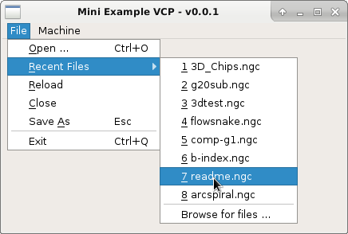
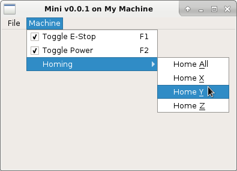

A collection of menu providers for use in YAML menu definitions.
Recent Files Menu¶

Recent Files Menu
-
class
qtpyvcp.widgets.recent_files_menu.RecentFilesMenu(parent=None, files=None, max_files=10)[source]¶ Recent Files Menu
Recent files menu provider.
Parameters: - parent (QWidget, optional) – The menus parent. Default to None.
- files (list, optional) – List of initial files in the menu. Defaults to None.
- max_files (int, optional) – Max number of files to show. Defaults to 10.
Example
YAML config:
main_window: menu: - title: File items: - title: &Recent Files provider: qtpyvcp.widgets.recent_files_menu:RecentFilesMenu kwargs: # optional keyword arguments to pass to the constructor max_files: 15
Homing Menu¶

Homing Menu
Homing Menu Provider
-
class
qtpyvcp.widgets.menus.homing_menu.HomingMenu(parent=None, axes=None)[source]¶ Homing Menu Provider
Parameters: - parent (QWidget, optional) – The menus parent. Default to None.
- axes (list, optional) – List of axes for which to show a homing action. If not specified the axis letter list from the INI file will be used.
Todo
Add un-homing actions if the axis is already homed.